Reading: Chapters 1 and 2
Introduction to Astronomy
Overview of the class
The idea is to introduce the scientific method through an overview of the historical development of modern ideas in astronomy and astrophysics.
There will be some math and literally astronomical numbers. Science is a quantitative effort to understand the world, and mathematics is the language to make quantitative and testable predictions on observable/experimental data.
Learning outcomes
(see Expected learning outcomes in syllabus).
Syllabus
Textbooks
Required textbook and resources
I will also publish my own notes on this website (see instructions at the bottom here), but these are by no means a substitute for the textbook material (they are, in a sense, my own reading of the textbook with the additions I may put on context/content).
Expected behavior
- Have a growth mindset: the point of getting an education is improving your knowledge and competences, not getting a letter grade. Some things should be challenging, and it is by working through the challenge that you will gain new understanding.
- Not everything is equally challenging for everyone: don't compare yourselves with each other, take a mental note of your knowledge now, and as the semester goes, compare your (future) self to your current status.
- Don't be disruptive or dismissive
- No vaping/smoking, eating, drinking (except water)
- You can help each other, discuss, compare: science is ultimately a collective enterprise, it is through the dialectic engagement of individuals and communities that refined understanding, new ideas, and better models are developed.
- The best the best discussions occur in a respectful environment, where everyone feels their opinion is valued, but also where no one is holding the discussion "hostage" by being disruptive. Try to act as an ideal scientist: be respectful and encourage a welcoming environment for everyone. Listen if others have questions, the answer may benefit you too
- Nevertheless, you are expected to submit your own work. Because the amount of cumulated knowledge in the history of humanity is vast, no single scientist can test and verify all hypothesis and also make new advances. Therefore, science as a collective enterprise requires a degree of trust in the ethical behavior of members of the community. N.B.: Scientists are still flawed human beings with their own individual motivations and fraud exist (e.g., Vaccines cause autism fraudolent paper), but eventually the mechanisms of reproduction tends to reveal them. Again, try to be an ideal scientist, discuss openly ideas but submit your own work based on your own understanding (and for your own personal growth!)
- Use of AI tools: not forbidden and I don't want to police it. Your submissions should be a reflection of your own work, and copy pasting output of an LLM without digesting it will be considered cheating
- Interact with me, TAs and each other, approach learning in an active way
- It is your responsibility to keep track of assignments, deadlines, etc. Official communication will occur through D2L, homework assignments through the "Mastering Astronomy" interface.
Tentative schedule
We will meet in Steward Observatory N210, Monday/Wednesday 2-3:15pm.
Homework
Reading (not graded) assigned per lecture, homework based on the textbook.
There will be one homework due each week (11 assignments + 3 lab writeups) starting on . These will be on "Mastering Astronomy" web interface. Late submissions graded with 50% penalty up to one week late.
You have one free no questions asked 3-day-late (72 hours after the due date/time) turn in for one homework assignment that can be used by you in case of dire need. Note that this CANNOT be used for the Signature Assignment. Please inform Neev Shah and Prof. Renzo on the day the assignment is due to use this late turn in.
Labs
There will be 3 in-class lab activities (one starting next week), including the "signature assignment" (see below). Each will have a report due as a homework assignment.
Signature assignment: making your own astronomical observations
This can be part of your portfolio at the end of college. More information will follow later in the course, but in short you will use both the Steward Observatory 21-inches telescope and a Seestar S50 modern camera controlled via your smartphone to compare observations with different tools and detectors.
Participation
During lessons I will try to cover the material in the text book with additions/adaptations, but I will not try to read the book for you: you are expected to do your own reading to be able to perform well in homework and exams, and ultimately in this class.
Starting from next lecture, attendance will be logged through Top hat. You have up to 4 absence unjustified (no question asked, attendance grade dropped).
Presence, and preferably, active participation is expected: by interacting we can all learn more and better! Learning is an active process, it requires engaging with the materials, asking questions, being puzzled and confused, and resolving this confusion.
Exams: Mid terms and final
There will be two mid-terms, in class closed-book/notes, on and . There will also be a final exam, comprehensive of all topics covered in the course, on at 1pm.
Know thyself
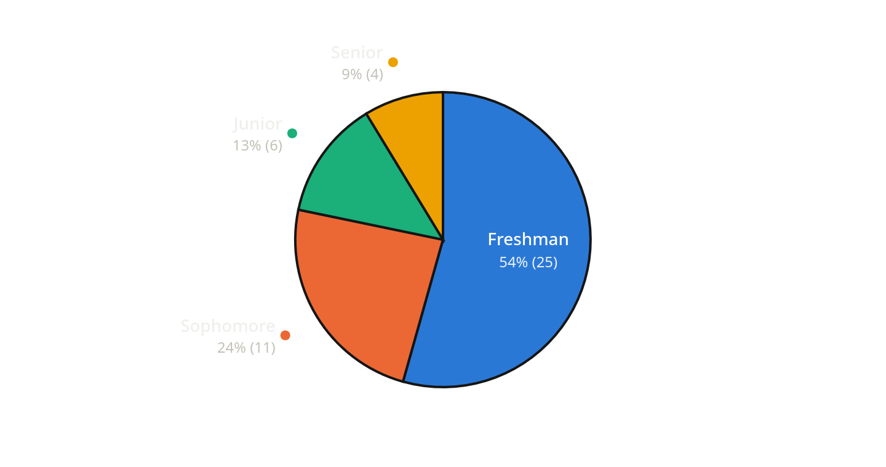
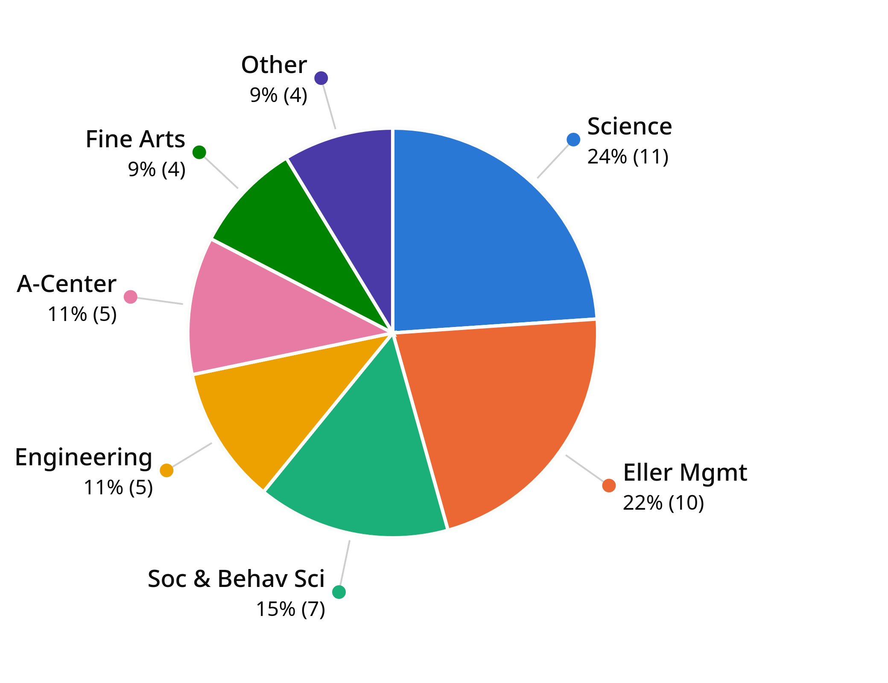
Who am I?
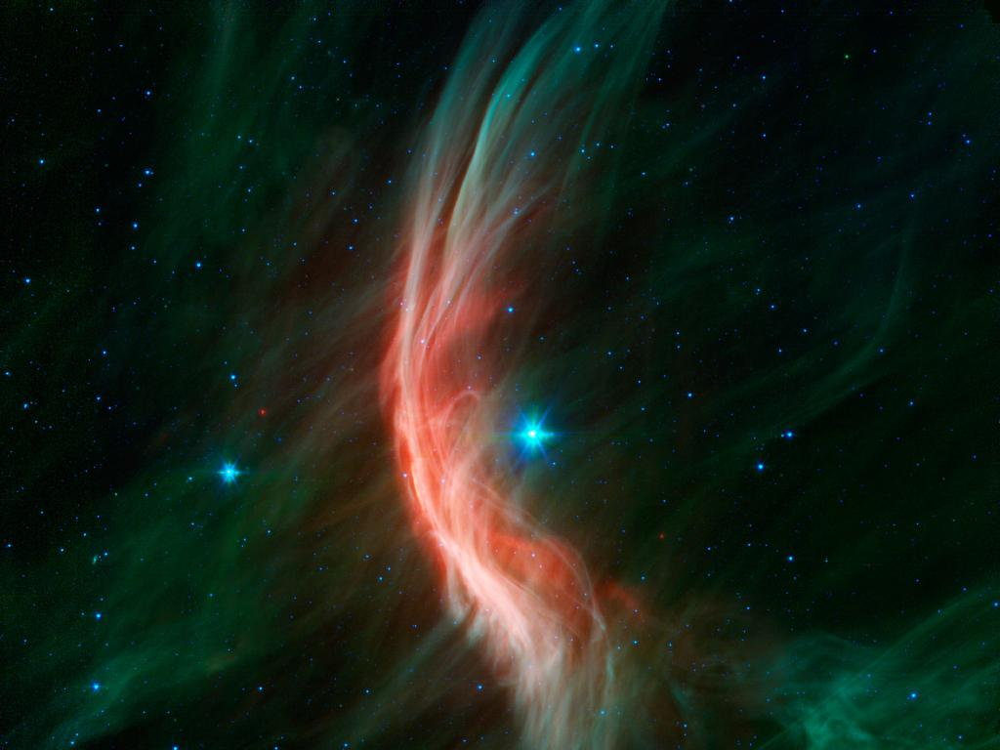
My name is Mathieu Renzo, I moved to Arizona to work here at Steward Observatory as a theoretical and computational astrophysicist. This means I use computer to simulate the physical processes in the evolution of stars, and I focus on the ones 10× more massive than the Sun, big enough to explode as supernovae and form the densest objects in the Universe, neutron stars and black holes.
Units and physical quantities
Let's now start by having an overview of where and when in the Universe we are, and paint a broad-brush map of the Universe.
In this course we will deal with physical quantities (position, time, distances, masses, …), which are measured in certain units (e.g., inches or meters, pounds or grams, seconds or years).
N.B.: For an equation to make sense, the two sides need to be of the same units: a length cannot be equal to a mass! Or a velocity cannot be equal to an energy. This is something you are actually familiar with in other context, the following intuitively does not make sense "I am 6 seconds tall"!
Like in life you chose your units for the context at hand (e.g., you wouldn't tell your height in miles or kilometers, or viceversa use inches or centimeters to measure an intercontinental air trip), in astronomical context we have to pick appropriate units for describing quantities. Scientists pick the units adapted to the problem: this typically means choosing units such that the numbers you are managing are "small" (of order unity).
In astrophysics, most commonly we use the "centimeter, gram, second" system of units (cgs) to describe most physical quantities. There are at least a few reasons:
- historical
- practical: electromagnetism, i.e., studying how light interacts with matter, is slightly less cumbersome
- coincidental: in these units the mass of the Sun is 2× 1033 g and its luminosity 4×1033 erg/s, so there is only one order of magnitude to remember - 33.
It is also often convenient to define units characteristic for the scale of a specific problem or astronomical object (chose the right units for the problem!).
Astronomical Unit (au)
Average distance between the Sun and Earth along the year: \(1 \mathrm{au} \simeq 150 000 000 \mathrm{km} = 150\) million kilometers. This unit is useful to describe things on planetary/stellar-system scale.
Light year (ly)
A light year is a measure of distance. It is possible to define this (which effectively connects the definition of space through distances to the definition of time, the year) because the speed of light in vacuum is a fundamental constant of nature: \(c = 3\times 10^{10}\) cm s-1 \(= 3\times 10^{5}\) km s-1. No matter how fast an observer is moving, they will always measure this value of \(c\) for the speed of light in vacuum.
N.B.: Being a "fundamental constant of nature" means that as far as we can test it with experiments and observations, its value does not change measurably. Assuming that the speed of light in vacuum, \(c\), is a constant allows also several physical results in electromagnetism, special and general relativity. You may not realize it, but every time you use the GPS on your phone, you are using relativistic corrections for the communication (at the speed of light) between your phone and satellites. Without these corrections, your GPS would be too inaccurate to be usable.
1 light year = distance traveled by light in vacuum in one year \(\simeq 9.56\times10^{12} \mathrm{km}\).
In astrophysics we also use the parsec, which corresponds roughly to \(1 \mathrm{pc} = 3.2 \mathrm{ly}\).
Observations as a time machine
Because the speed of light in vacuum is constant and finite, it takes time for a particle of light (photon) emitted somewhere a to reach somewhere else, say your eye or telescope.
For example, it takes a photon emitted at the "surface" of the Sun about ∼ 1 au/ \(c\) = 8 minutes to reach Earth, that is: 1 au ≅ 8 light minutes.
Since \(c\) is constant, the larger the distance, the longer the time it takes for light to reach us:
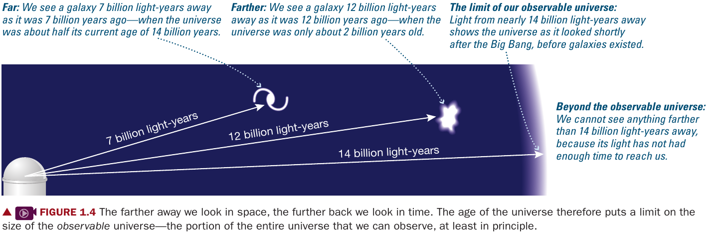
In fact, light seen today must have left the source a \(D/c\) ago, with \(D\) distance between us and the source, and \(c\) the speed of light. Note that we are implicitly assuming that there is vacuum between us and the source, which is not correct but acceptable. However, \(D/c\le\) age of the Universe (otherwise the light would have needed to leave the source before the Universe existed!), which sets a limit on the size of the observable Universe.
N.B.: think of light as a "snail mail" from the source: it has to physically move between two points to be delivering a message, and that takes time!
How old is the Universe?
Based on several lines of observations we will discuss later in the course (cosmic microwave background, the distribution of galaxies in space, etc.), we think the Universe as a whole is about 13.7×109 yr = 13.7 Gyr old. The image below tags some specific galaxies observed by JWST seen very early in the evolution of the Universe (baby galaxies in formation!)
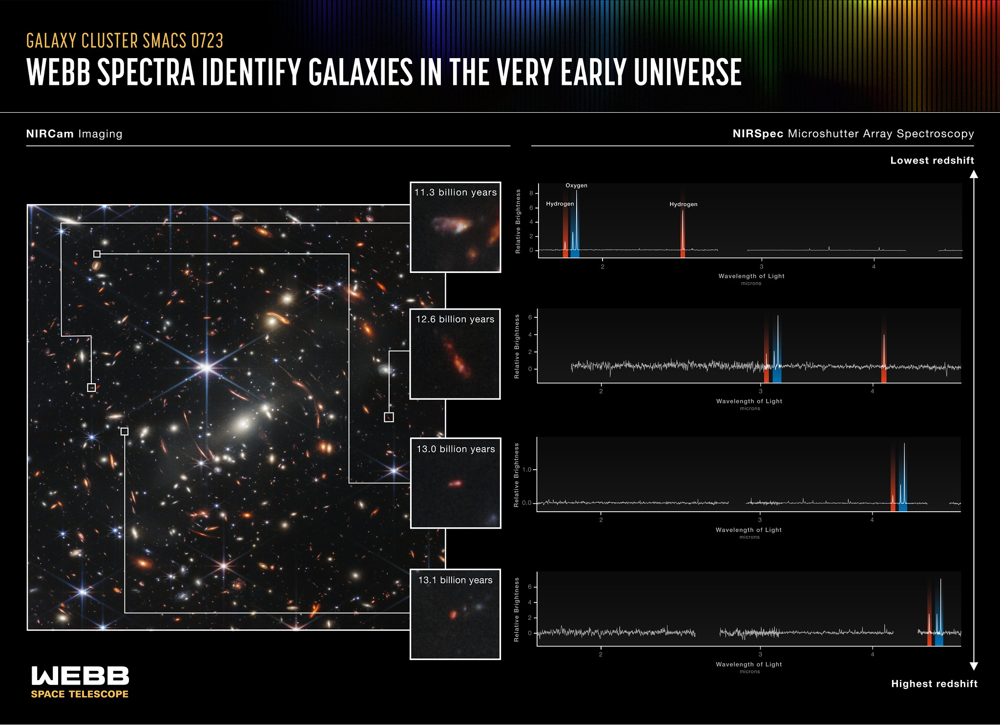
To gain intuition, lets rescale the entire history of the Universe as if it were one single year (one loop of the Earth around the Sun):
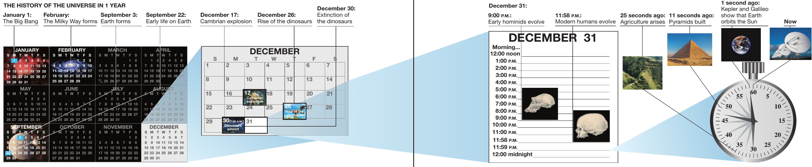
As a species homo we have been around for only ∼ 3 million years, a very small fraction of the ∼ 14 billion-year-long Universe's history.
N.B.: Scientific questions are dependent on the cultural and contextual knowledge. Before the ∼ 1840s, when the community of physicists started investigating the concept of entropy and irreversibility in time of processes, cosmological theories did not concern themselves with evolution or formation: the simple assumption of a static and always existing Universe was satisfying enough. With the realization that for something to shine (e.g., a star) it has to lose energy, and thus its interior has to compensate for such a loss and consequently evolve is a spark igniting the question of then how did things look in the past/future, thus evolution and consequently beginning of stellar objects.
Where are we?
Aim: exploring the scale of the Universe in relation to our positon.
Earth
Steward Observatory on google Earth (zoom out).
Geocentrism was a theory of the structure of the Universe dominant in western science until the 17th century. We still use it today, for example if you ever estimate the time based on the position of the Sun (apparent on the sky). Often scientific theories are super-seeded by newer points of view that can explain all the old phenomena (e.g., reducing to the previous theory in some special case), while enabling investigation of new phenomena.
Today, the positions of objects in the sky can be described from a reference frame centered on Earth, but the math quickly becomes more cumbersome. It is much easier to think of the Earth as orbiting the Sun, within a system of planets.
The radius of Earth is \(R\sim6000\) km.
Solar system
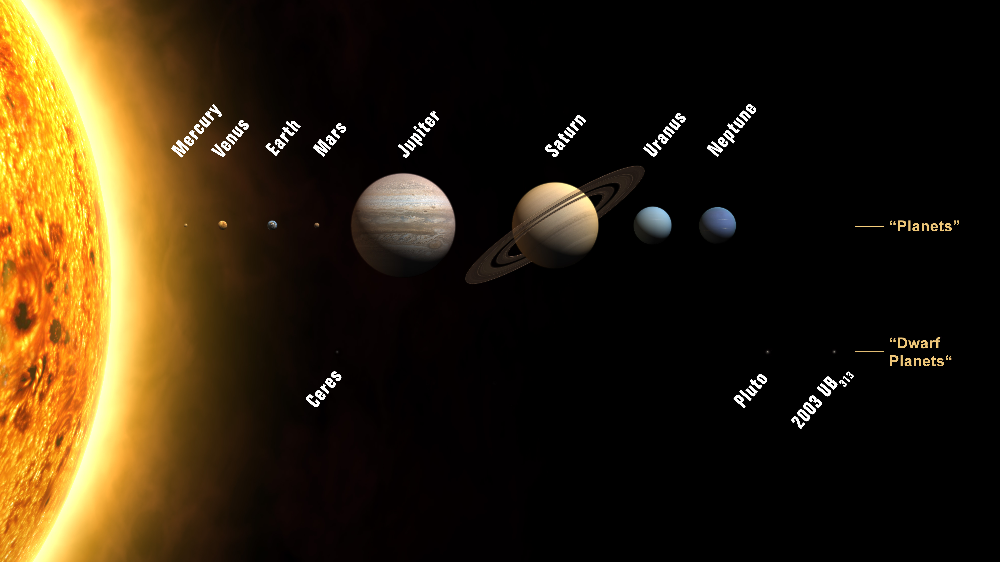
The solar system is composed of:
- a central star: the Sun (☉)
- planets: These are self-gravitating objects, too small to power their own internal energy sources, in orbit around a star, and have cleared their orbits. They come in two broad categories: rocky and gaseous.
- moons: bodies orbiting not the Sun, but planets, they can exceed the size of certain planets.
- dwarf planets: planet-sized bodies (self-gravitating), orbiting a star, but that have not cleared their orbits. This class was introduced at the 2006 International Astronomical Union General Assembly, after the discovery of Eris (here labeled as 2003 UB313) orbiting farther than Pluto.
The cartoon above is not to scale! The size of the Solar system is about 60 au ≅ 1010 km, the radius of the Earth is about 6000 km = 6 × 103 km, and the radius of the Sun is \(R_{☉} \sim 7\times 10^{10}\mathrm{cm} = 7 \times 10^{5} \mathrm{km}\). This website allows you to scroll the solar system at a scale of 1 pixel = 1000 km. Alternatively, see also this website to horizontally scroll through a solar-system model to scale such that each pixel corresponds to the size of the moon.
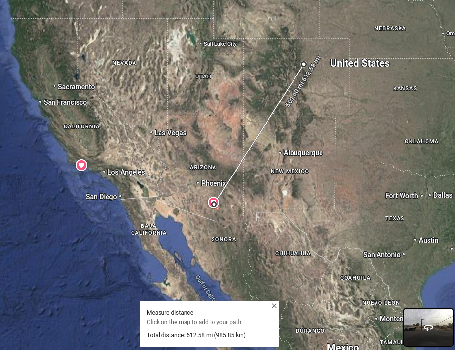
Galactic
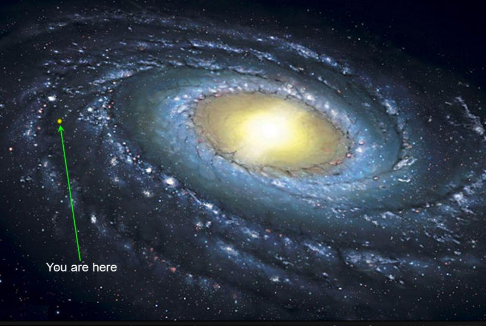
The size of the Milkyway galaxy is about 10kpc = 30 000ly. The Solar system is about 8kpc away from the Galactic center (which is in the southern Emisphere).
The immediate solar neighborhood is relatively low density in stars compared to the Galactic center: stellar "crowding" decreases with distance to the Galactic center. This is located in the Southern Emisphere.
When you see the "stream of stars" in a very dark night sky, you are seeing one of the arms of the Milky way, a grand-spiral galaxy, from within:
Order of magnitude estimate: how many stars in the Milky way?
The size of the Milkyway is $R∼10\,000\,\mathrm{pc}=10\,\mathrm{kpc}=104\,\mathrm{pc}, so it has a volume $V∼ R3 ∼ (104)3=1012\,\mathrm{pc3}. Consider the distance from the Sun to the nearest star, \(d\sim4 \,athrm{ly}\sim1 \mathrm{pc}\). So on average we can estimate a star occupies about \(d^{3}\) of volume in the Galaxy, and the number of star to be the Volume of the Galaxy divided the volume for each star, \(N\simeq V/ d^{3} = 10^{12} \mathrm{pc}^{3}/(1 \mathrm{pc})^{3} = 10^{12}\).
There are about 1012 = 1 000 000 000 000 = 1 Trillion stars in the Milky way Galaxy, which is roughly the correct answer!
N.B.: Chose the right units (pc = parsecs) to keep the calculations simple. We were looking for a number without units (the number of stars), and the \(\mathrm{pc^{3}}\) term appeared at the numerator and denominator, canceling out.
Not all these stars are visible: many are too faint, hidden behind clouds of interstellar dust, in too crowded areas to stand out, etc.

Note the two bright spots in the southern emisphere. These are the LMC and SMC, two satellite galaxies of the Milky way.
Extra-galactic
Galaxies are not isolated: the distance between two large galaxies is often comparable to the size of the galaxies themselves, causing constant imbalances between the internal gravitational pull within a galaxy and the perturbations coming from the other.
This leads to the formation of "clusters" of galaxies, bound together gravitationally, but with chaotic orbits of galaxies zooming past each other (instead of a nice organized flow in a plane!).
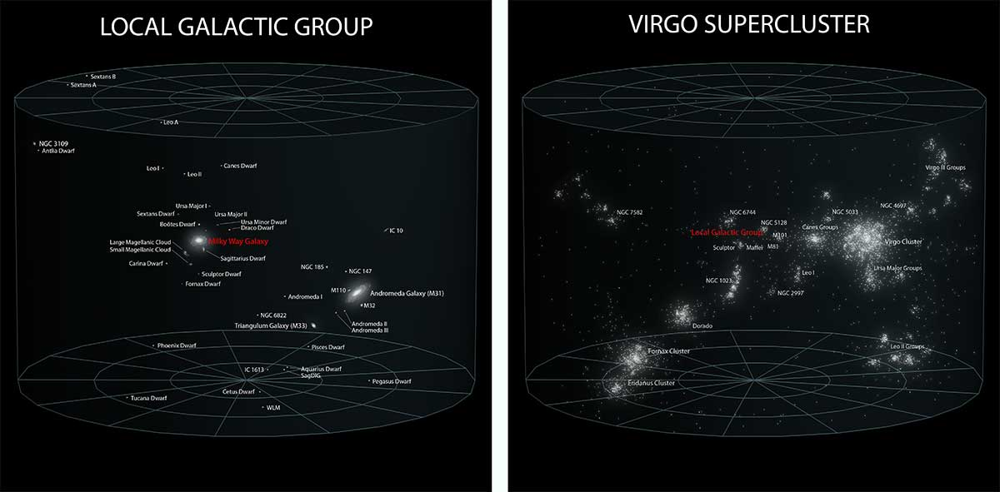
The Milky way as a galaxy is part of, in turn:
- Local Group (together, for example with Andromeda, M31), on a scale of millions of ly.
- Virgo Galaxy cluster, on a scale of hundreds of millions of ly
- Laniakea Supercluster
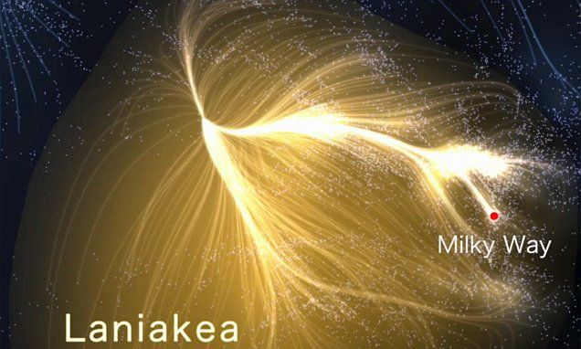
The very large scale
Galaxy clusters and superclusters are organized along "strings" at the edge of large regions empty of structure. These form the "Cosmic web":
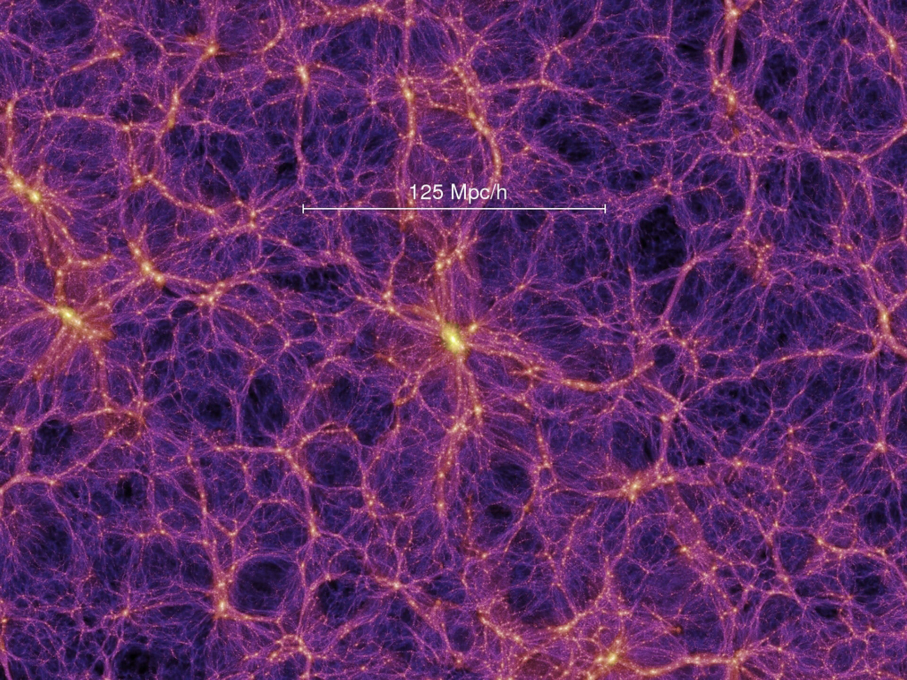
Galaxy super-clusters are like "knots" in this web.
Zooming further out, the universe at large is extremely "homogeneous", meaning, at every point everything looks "the same", every point has the same density \(\rho\). It all started from very small wiggles!
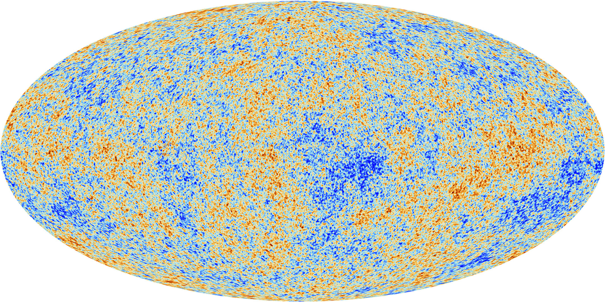
Motion of the Universe
Earth's rotation → day
Along it's axis with a period of ∼ 24h. Where the axis intersects the planet's surface defines the North and South poles
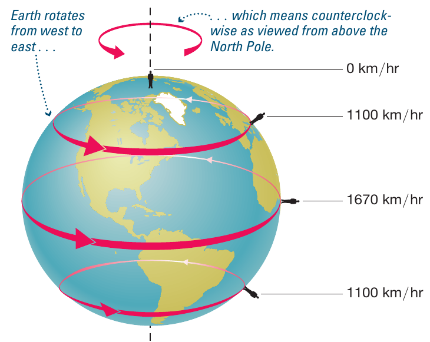
Earth's revolution around the Sun → year
During the year, the Earth orbits the Sun along an elliptical orbit (but very close to a circle). The rotation axis for the day and the orbital axis for the year are misaligned by about 23.5 degrees.
This misalignment is constant towards the year and is the cause for the seasonal weather variations away from the Equator.
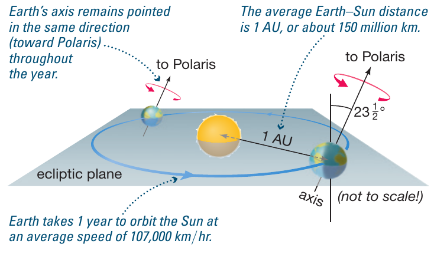
The orbital velocity of Earth around the Sun is about 30 km s1.
Sun around center of Milky way → P∼250 Myr
Much like planets orbit the Sun, stars in a galaxy orbit the center of the Galaxy. We can measure this rotation rate as a function of the distance from the center of a galaxy, and we find that the stars move too fast!
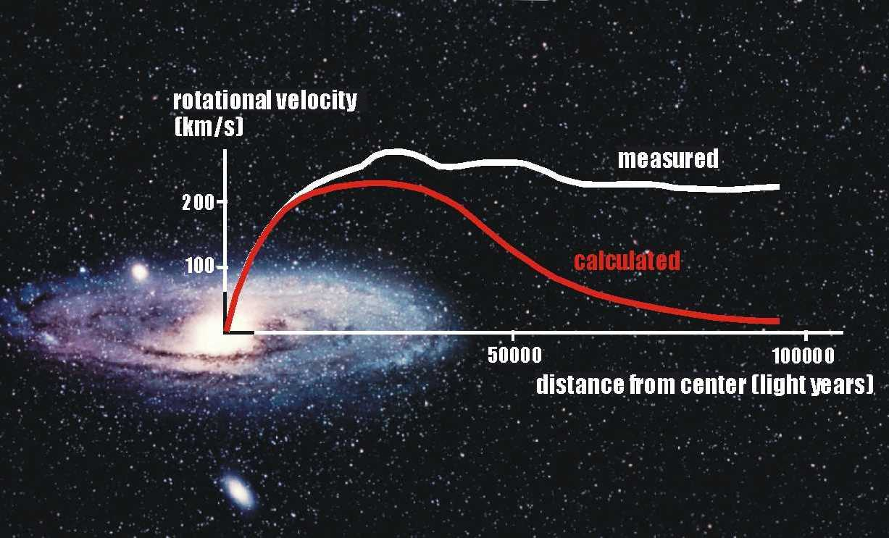
The rotation rate around the Galaxy depends on the position in the Galaxy itself (and the amount of mass contained within that orbit!). For the Sun it takes about ∼ 230 million years (Myrs) to complete the rotation.
This observation can be explained if one postulates the presence of more mass that does not shine i.e., does not produce light. This dark matter is therefore not visible, if not indirectly for its gravitational effect on the orbit of stars around galaxies. The fact that galactic rotation curves require invisible matter was first observed by Prof. Vera Rubin, and explaining observations requires 23% of the Universe to be made of this dark matter, despite of the lack of detections of dark matter particles.
On top of this, you can think of all the stars in a galaxy like molecules of a gas: each has a ("small" with respect their galactocentric orbital motion) random velocity – similar to the thermal velocity of molecules of a gas.
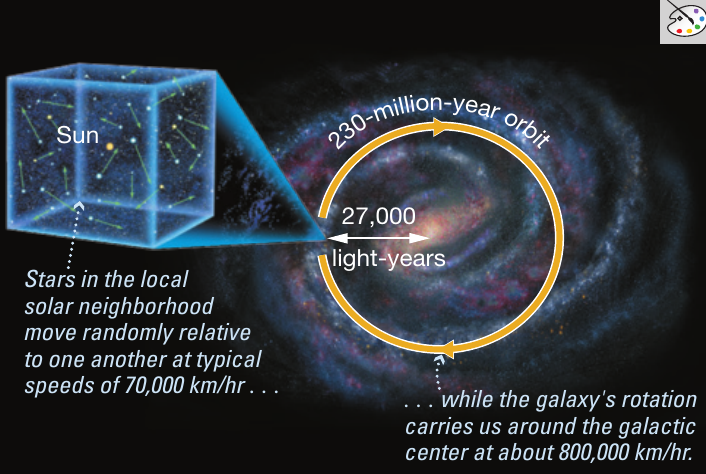
The "thermal velocity" of the Sun is ∼ 10 km s-1.
Milky-way within Virgo cluster
Clusters of galaxies are gravitationally bound collections of galaxies, each in turn collections of stars, possibly orbited by planets. The galaxies within a cluster feel strongly each other's gravity being pulled and stretched, compressed, with large velocities.
The animation above shows a simulation of most of the mass of the Universe, which is dark matter. Lighter clumps indicate more dark matter forming the "cosmic web" and moving internally, forming and disrupting, merging. Imagine each light dot as a cluster of galaxies to get the right idea.
Expansion of the Universe
Thanks to a regular relation between the period of pulsations of a certain type of stars and its luminosity discovered by Henrietta Leavitt, Hubble discovered that galaxies were moving away from each other, and furthermore, the farther a galaxy, the farther its speed: \(v = H \times D\), with \(H\) the constant (in every direction) of proportionality between the speed \(v\) and the distance \(D\). This is the Hubble "law".
To understand it, see the Raisin cake analogy: each galaxy is a raisin. As the cake bakes and it inflates, the distance between the raisins grows. Consider being in one raisin, the distance to the nearest raisin grows by 2× in a given time. The raisin one over, it grows by 3×, etc. Larger distances imply faster motion seen from inside.
The universe however doesn't expand into something (no oven to its cake!), in this sense it is an "edgeless" infinite cake.
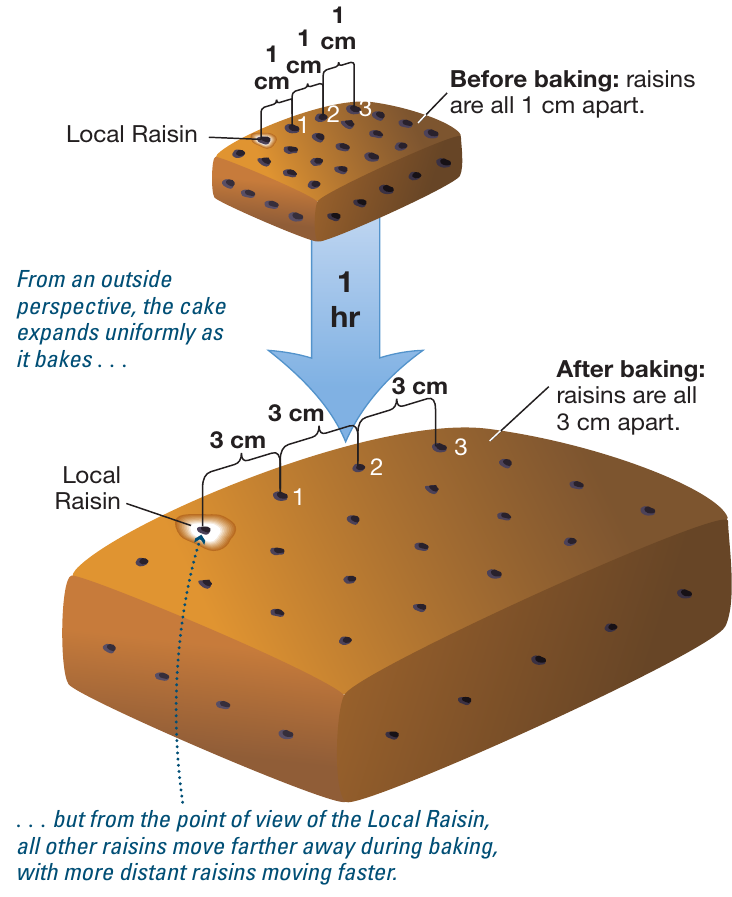
In 2011 the physics Nobel prize, was awarded to Saul Perlmutter, Brian P. Schmidt (a UoA undergraduate alumnus), and Adam G. Riess for their discovery of the accelerated expansion of the Universe.
They used a particular kind of stellar explosions (SNIa) to demonstrate that not only the farthest objects move faster (Hubble's law), but that the faster/farther galaxy accelerate more. This as-yet unexplained phenomenology can be reconciled with our present picture of the Universe invoking a "dark energy" contribution.
Like "dark matter" is stuff we don't see shining but that is postulated based on its gravitational effects on what we do see, "dark energy" is a contribution to the Universe that we cannot quite describe, except that we see something acting like a distributed energy density throughout the Universe resulting in its accelerated expansion.